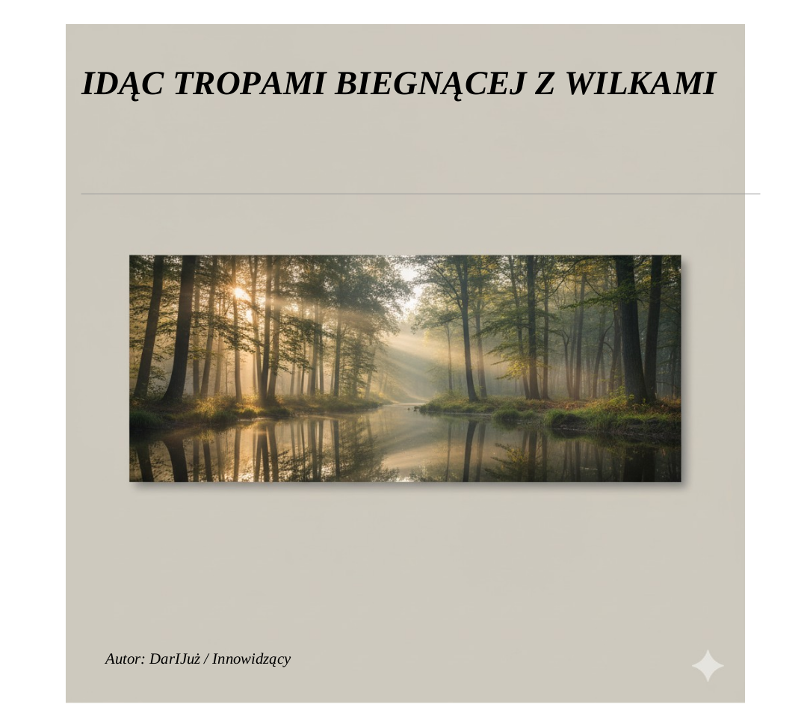

📖 „Idąc Tropami Biegnącej z Wilkami”
Duchowa kontynuacja myśli Clarissy Pinkoli Estés – o relacjach, kobiecości i przebudzeniu serca.
🎬 Zobacz prezentację📖 Opis Książki
📖 Przeczytaj fragment
🇵🇱 Kup (PDF)
📖 Following the Trails of the One Who Runs with the Wolves
📖 Fragment of the Book🇬🇧 Buy (EN)
📖 „KSIĘGA WIDZENIA”

O jasnowidzeniu, myślokształtach i szmaragdowej mądrości Thotha – teoria i praktyka.
🎬 Zobacz prezentację📖 Opis Książki
📖 Przeczytaj fragment
🇵🇱 Kup (PDF)
🌙 O projekcie
Strona otwiera cykl „Księga Widzenia” — książek o duchowej drodze, świadomości i relacjach. To przestrzeń łącząca literaturę, psychologię, duchowość i sztukę wizji.
📬 Kontakt
Email: DarIJuz_Lektor@proton.me